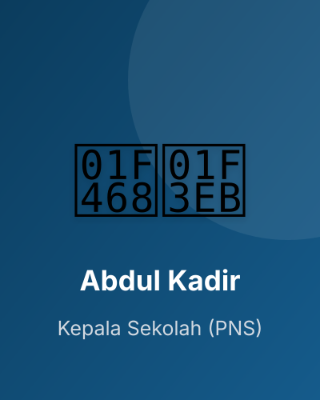
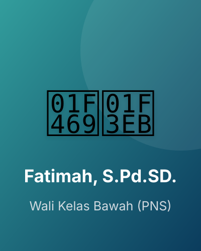
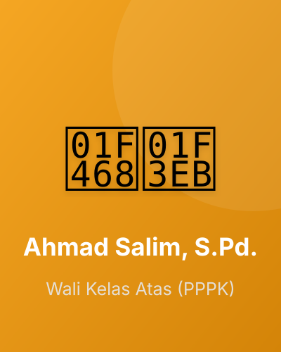
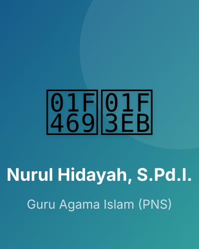
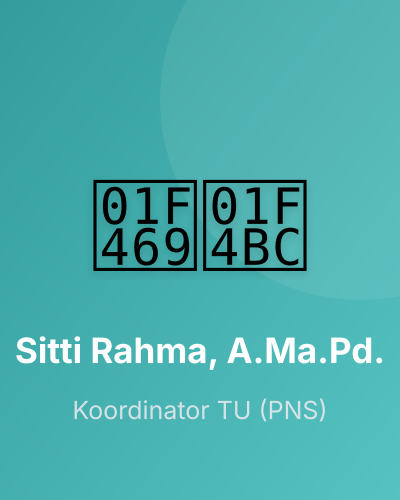

Mengenal lebih dekat sejarah, visi misi, dan jajaran pendidik SD Negeri Bobong.
SD Negeri Bobong didirikan secara resmi pada tanggal 04 Oktober 1971 berdasarkan Surat Keputusan (SK) Pendirian Nomor 420/04/10/1971. Sekolah ini merupakan institusi pendidikan dasar tertua di jantung ibukota Kabupaten Pulau Taliabu, Maluku Utara.
Selama lebih dari lima dekade, sekolah ini telah mengabdi mendidik anak-anak di Taliabu Barat. Sejak pemekaran Kabupaten Pulau Taliabu pada tahun 2013, SD Negeri Bobong terus memperbarui kurikulum dan sarana prasarana guna mempertahankan posisinya sebagai sekolah negeri rujukan di pusat kabupaten.
| Nama Resmi Sekolah | SD Negeri Bobong |
| NPSN | 60200589 (Terdaftar resmi di Dapodik Kemendikbudristek) |
| Status Sekolah | Negeri |
| Tanggal & No. SK Pendirian | 04 Oktober 1971 (SK: 420/04/10/1971) |
| Akreditasi | B (Baik) |
| Kurikulum Operasional | Kurikulum Merdeka |
| Alamat Lengkap | Jl. Mansur Sou, Desa Wayo, Kec. Taliabu Barat, Kab. Pulau Taliabu, Provinsi Maluku Utara, 97791 |
| Status Kepemilikan Lahan | Pemerintah Daerah Kabupaten Pulau Taliabu |
9 Ruang Kelas belajar (6 Rombel Aktif) yang bersih, kondusif, dan nyaman untuk proses KBM.
1 Ruang Guru dan Kepala Sekolah sebagai pusat administrasi, koordinasi, dan pelayanan pendidikan.
2 Ruang Toilet bersih dan nyaman yang terawat dengan baik untuk guru dan murid.
1 Ruang Gudang penyimpanan inventaris, peralatan belajar mengajar, serta perlengkapan sekolah.
Halaman Olahraga & Upacara yang luas di bagian tengah sekolah untuk melatih ketangkasan fisik siswa.
Sekolah mengoptimalkan Pojok Baca Kelas dan koleksi literasi untuk meningkatkan minat baca murid harian.
"Terwujudnya peserta didik yang Cerdas dalam berpikir, Kokoh dalam Karakter akhlak mulia, serta luhur dalam Menjaga Nilai Budaya bangsa di era global."

Pembina Tk. I / IV-b
PNS
Guru Kelas Bawah
PNS
Guru Kelas Atas
PPPK
Pendidikan Agama
PNS
Penjas & Seni Budaya
Honorer Daerah
Koordinator Tata Usaha
PNSPendidik Bidang Studi
PNS